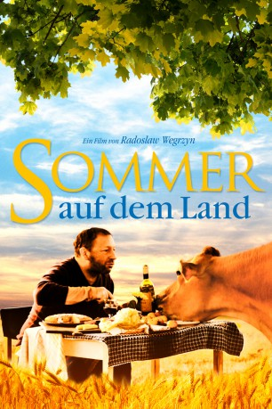

#5112 Sommer auf dem Land
 
 IMDB-Wertung: 6.6 / 10
IMDB-Wertung: 6.6 / 10  Metascore: 0
Metascore: 0 
Bogdan ist ein international gefeierter Konzertpianist, doch nach dem Tod seiner Frau Iza kehrt er der großen Bühne den Rücken. Er zieht sich auf den beschaulichen Bauernhof seiner Mutter zurück. In dem kleinen Dorf an der Ostsee haben er und seine Frau sich bereits als Kinder am Strand die ewige Liebe geschworen. Jetzt ist alles anders, Iza ist gegangen. Und Bogdan ergibt sich mit reichlich Alkohol seinem Schicksal, unfähig sein normales Leben wieder aufzunehmen. Doch seine resolute Mutter hat ihr eigenes Rezept den Verzweifelten aus seiner Lethargie zu befreien: Die Renovierung des maroden Hofes und die harte Stallarbeit. Eines Tages macht Bogdan eine alles verändernde Entdeckung. Ausgerechnet eine überraschend musikalische Milchkuh holt Bogdan zurück ins Leben. Eine Entwicklung, die seine Familie und Freunde fassungslos macht. Als Bogdan dann auch noch ein großes Dorffest veranstaltet, überschlagen sich die Ereignisse …
Jahr: 2011
Dauer: 90 Minuten
FSK: 12
Land: Polen Studio: Farbfilm-VerleihTonspuren:
Untertitel:
Auflösung: 1080p (1920x1080) Größe: 2621 MB
Genre: Komödie
Regisseur: Radek Wegrzyn
Drehbuch: Helme Heine
Soundtrack:
Darsteller:
- Zbigniew Zamachowski als Bogdan
- Antoni Pawlicki als Pawel
- Agata Buzek als Anna
- Elzbieta Karkoszka als Katharina
- Andrzej Mastalerz als Priest
- Wiktor Zborowski als Veterinary
- Patrycja Topajew als Young Izabela
- David Lebkowski als Young Bogdan
- Lucyna Malec als Izabela
- Zdzislaw Rychter als Franek
- Stanislaw Sniezko als Zygmunt
- Joanna Kasperska als Ilona
- Malwina Buss als Ola
- Lucja Burzynska als Janina
- Malgorzata Szmuda als Arletka
- Sebastian Becker als Anton
- Marcin Markowicz als Marek the violinist
- Jerzy Jastrzebski als Stas the accordionist
- Lucyna Jawoszek als Village lady 1
- Henryka Bajer als Village lady 2
- Danuta Muszynska als Village lady 3
- Jenny als Klara the cow
Datei: X:\2011(N-Z)\Sommer auf dem Land (2011, FSK12, 1920x1080).mkv seit 23.12.2016
Festplatte: HD 2011(G-Z)
 Es gibt insgesamt 132 Filme in der Gruppe '2011(N-Z)'
Es gibt insgesamt 132 Filme in der Gruppe '2011(N-Z)'